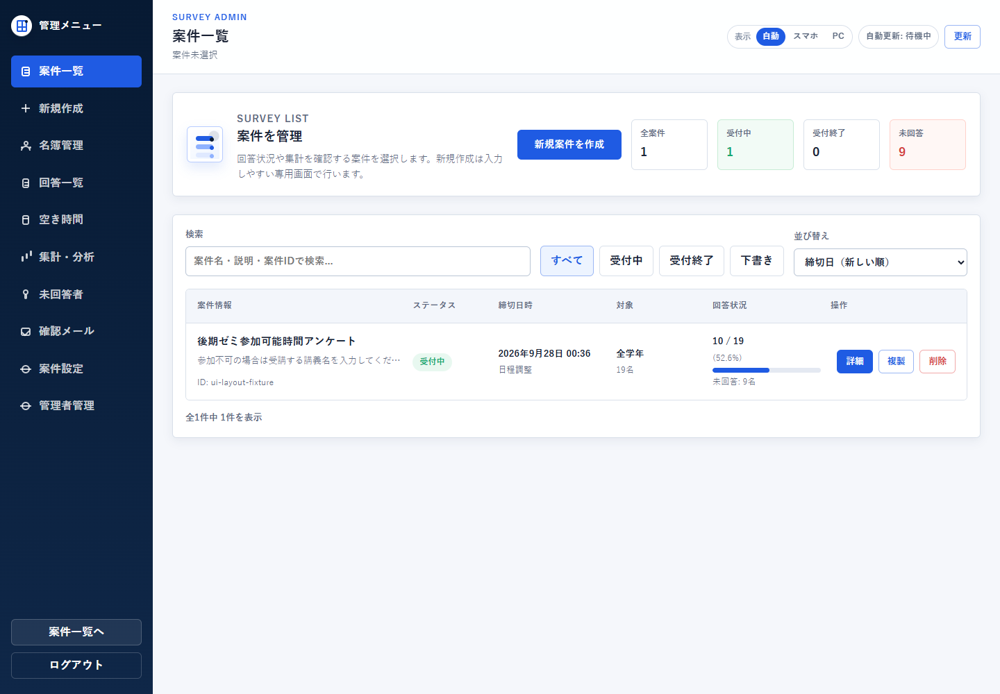
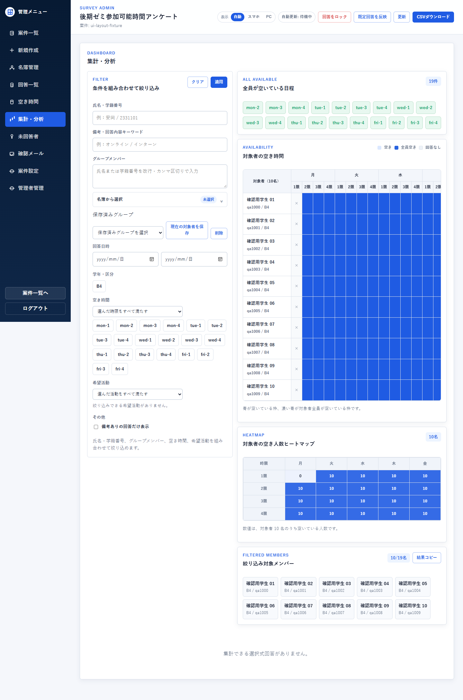

人のために作ったもの実アプリのローカルQA画面（2026年9月14日）。アンケート・回答は架空のテストデータです。 実アプリのローカルQA画面（2026年9月14日）。学生名・回答は架空のテストデータで、実際の研究室メンバーの予定ではありません。
研究室アンケート・日程調整システム
回答を集めた後の確認や日程調整も楽にしたい。AIを開発に活用し、アンケート作成、回答管理、空き時間の分析をまとめたWebシステムを制作しました。


Why I started
取り組んだきっかけ
集まった回答を、次の判断につながる情報に。
回答を集めるだけでなく、複数の調査を管理し、未回答や候補日時を確認する作業を一つの流れにまとめたいと考えました。
What I cared about
大切にしたこと
- 役割
- 回答する人と調査を作る人で必要な画面を分ける。
- 比較
- 日程の傾向を表とヒートマップで確認できるようにする。
Results & learning
結果と学んだこと
回答・管理・集計をつなぐシステムを制作しました。Web機能を運用上の作業に合わせて整理する経験です。
回答を集める機能だけでなく、集まった情報から次の判断をしやすくする視点を大切にしました。
自分の担当と、生成AIの活用
回答・管理画面と情報の整理、機能統合、運用に合わせた改善。学術研究そのものとは別の制作です。
AIによる開発支援と、自分による要求整理・評価・動作確認を組み合わせました。
取り組みの詳細
回答の流れを整理する
学生向け回答画面と管理者の作成画面を分けました。
情報を見える形にする
回答一覧、未回答の確認、空き時間分析とヒートマップをまとめました。
複数の調査を管理する
調査の切り替えと結果確認を行えるようにし、管理の負担を減らす構成を考えました。
掲載資料と現在の課題
掲載した回答と日程は架空です。個人の回答・未回答情報や実際の管理URLは掲載しません。
保存済みの実アプリのテスト画面を使用。画面の再現イラストではありません。